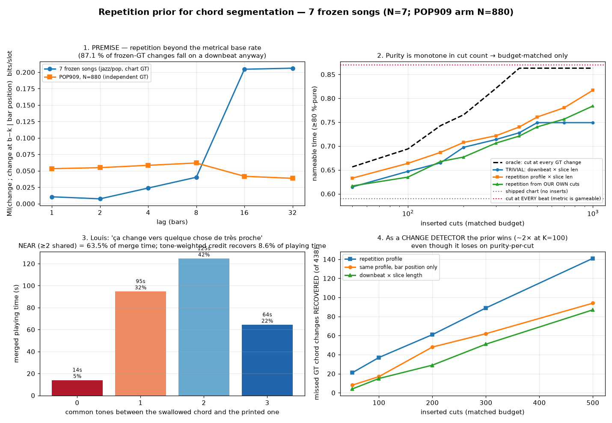

N = 7 hand-verified frozen songs (audio-side claims); the premise screen's second arm is POP909, N = 880. Every number from a real run, 2026-07-27.

| song | period (beats) | bars | gain vs metre (bits/beat) | gate |
|---|---|---|---|---|
| bein_green | 16 | 4 | +0.119 | ON |
| blue_bossa | 16 | 4 | +0.012 | GATED OFF |
| blue_bossa_backing | 128 | 32 | +0.198 | ON |
| close_to_you | 8 | 2 | +0.036 | ON |
| every_breath_you_take | 32 | 8 | +0.528 | ON |
| georgia_on_my_mind | 8 | 2 | +0.004 | GATED OFF |
| stand_by_me | 32 | 8 | +0.219 | ON |
"missed" = the shipped chart has no boundary within ½ beat. NEAR = the two GT chords share ≥2 tones, i.e. exactly the ambiguous cases Louis predicted the acoustics would fail on.
| song | t (s) | from | to | shared tones | |
|---|---|---|---|---|---|
| bein_green | 20.71 | A:7 | D:hdim7/G# | 0 | DISTANT |
| bein_green | 33.56 | F:7 | A#:maj7 | 2 | NEAR |
| bein_green | 46.41 | A:7 | D:hdim7/G# | 0 | DISTANT |
| bein_green | 62.48 | A#:maj7 | A#:6 | 3 | NEAR |
| bein_green | 65.69 | A#:6 | G#:maj7 | 1 | DISTANT |
| bein_green | 72.11 | C#:maj7 | A#:maj7 | 1 | DISTANT |
| bein_green | 78.54 | A#:maj7 | G:min | 2 | NEAR |
| bein_green | 88.18 | C:min7 | F:7 | 2 | NEAR |
| bein_green | 91.39 | F:7 | A#:maj7 | 2 | NEAR |
| bein_green | 101.03 | D:hdim7/G# | G:7sus4 | 1 | DISTANT |
| bein_green | 104.24 | G:7 | C:min7 | 1 | DISTANT |
| bein_green | 110.67 | F:7 | A#:6 | 1 | DISTANT |
| bein_green | 113.88 | A#:6 | C:min7 | 2 | NEAR |
| bein_green | 120.31 | A#:maj7 | A:7 | 1 | DISTANT |
| bein_green | 123.52 | A:7 | D:hdim7/G# | 0 | DISTANT |
| bein_green | 126.73 | D:hdim7/G# | G:7sus4 | 1 | DISTANT |
| bein_green | 129.95 | G:7 | C:min7 | 1 | DISTANT |
| bein_green | 142.80 | F:7/C | A#:maj7 | 2 | NEAR |
| blue_bossa_backing | 161.53 | C:min7 | F:min7 | 2 | NEAR |
| blue_bossa_backing | 167.93 | G:7 | C:min7 | 1 | DISTANT |
| blue_bossa_backing | 174.32 | G#:7 | C#:maj7 | 2 | NEAR |
| blue_bossa_backing | 187.12 | C:min7 | F:min7 | 2 | NEAR |
| blue_bossa_backing | 212.72 | C:min7 | F:min7 | 2 | NEAR |
| blue_bossa_backing | 222.32 | C:min7 | D#:min7 | 2 | NEAR |
| blue_bossa_backing | 225.53 | G#:7 | C#:maj7 | 2 | NEAR |
| blue_bossa_backing | 235.12 | G:7 | C:min7 | 1 | DISTANT |
| blue_bossa_backing | 238.32 | C:min7 | F:min7 | 2 | NEAR |
| blue_bossa_backing | 292.73 | F:min7 | D:hdim7 | 3 | NEAR |
| close_to_you | 11.45 | C:maj | C:6 | 3 | NEAR |
| close_to_you | 30.45 | D:maj/G | G:maj7 | 2 | NEAR |
| close_to_you | 38.60 | B:7 | B:min7 | 3 | NEAR |
| close_to_you | 67.11 | C:6 | C:maj7 | 3 | NEAR |
| close_to_you | 68.46 | C:maj7 | C:6 | 3 | NEAR |
| close_to_you | 71.18 | C:maj7 | D:9 | 2 | NEAR |
| close_to_you | 76.61 | D:9 | C:6 | 3 | NEAR |
| close_to_you | 82.03 | B:7 | B:min7 | 3 | NEAR |
| close_to_you | 94.25 | G:maj7 | D:maj/G | 2 | NEAR |
| close_to_you | 95.61 | D:maj/G | G:maj7 | 2 | NEAR |
| close_to_you | 103.72 | C:7 | C:min7 | 3 | NEAR |
| close_to_you | 109.12 | F:min7 | C#:6 | 2 | NEAR |
| close_to_you | 115.86 | G#:maj7 | D#:maj/G# | 2 | NEAR |
| close_to_you | 117.21 | D#:maj/G# | G#:maj7 | 2 | NEAR |
| close_to_you | 141.50 | D#:9 | C#:6 | 3 | NEAR |
| close_to_you | 146.90 | C:7 | C:min7 | 3 | NEAR |
| close_to_you | 157.69 | C#:6 | G#:maj7 | 1 | DISTANT |
| close_to_you | 163.09 | G#:maj7 | C#:6 | 1 | DISTANT |
| close_to_you | 168.48 | C#:6 | G#:6 | 2 | NEAR |
| close_to_you | 179.28 | G#:6 | C#:maj7 | 3 | NEAR |
| close_to_you | 184.67 | C#:maj7 | G#:maj7 | 2 | NEAR |
| every_breath_you_take | 74.60 | F:min9 | C#:maj | 2 | NEAR |
| every_breath_you_take | 152.38 | D#:maj | G#:maj | 1 | DISTANT |
| every_breath_you_take | 156.53 | G#:maj | F:min9 | 3 | NEAR |
| every_breath_you_take | 160.68 | F:min9 | C#:maj | 2 | NEAR |
| every_breath_you_take | 164.83 | D#:maj | F:min9 | 2 | NEAR |
| every_breath_you_take | 168.98 | F:min9 | C#:maj | 2 | NEAR |
| every_breath_you_take | 177.28 | F:min9 | G#:maj | 3 | NEAR |
| every_breath_you_take | 181.43 | G#:maj | F:min9 | 3 | NEAR |
| every_breath_you_take | 185.58 | C#:maj | G#:maj | 1 | DISTANT |
| stand_by_me | 20.29 | A:maj | F#:min | 2 | NEAR |
| stand_by_me | 24.31 | F#:min | D:maj | 2 | NEAR |
| stand_by_me | 36.36 | A:maj | F#:min | 2 | NEAR |